操作系统外设管理复习
外设管理
目的
- 提高效率：通过缓存等机制，匹配CPU的速度
- 方便用户：统一了繁多的外设，提供了统一的访问方法
- 方便控制：方便OS对外设的控制
功能
- 提供接口
- 设备的分配、释放
- 设备的访问、控制
- I/O缓存和调度
控制方式
对外设的控制是通过外设提供的控制器进行的，包括控制寄存器、状态寄存器、以及一些数据的寄存器。
通过读写这些寄存器我们就实现了对外设的控制
I/O分类
数据组织
- 块设备：以数据块为单位存储、传输信息。传输速率高，可随机读写
- 字符设备：以字符为单位存储、传输信息。传输速率低，不可随机读写
用途
- 存储设备
- 传输设备
- 人机交互设备
资源分配
- 独占设备：同时只能由一个设备访问
- 共享设备：同时允许多个设备访问
- 虚设备：在一类设备上模拟另一类设备
设备控制器
图示
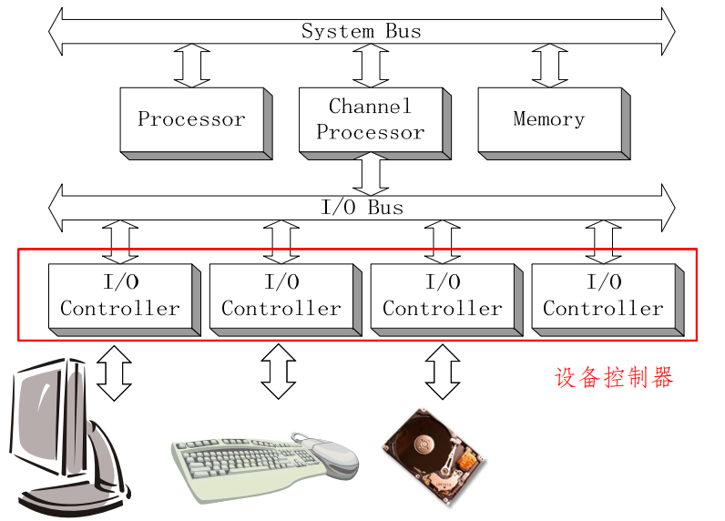
功能
- 接受和识别CPU指令
- 数据交换：CPU与控制器、控制器与设备
- 设备状态的了解和报告
- 设备地址识别
- 缓冲区
- 对设备传来的数据进行差错检测
I/O硬件组成
- 控制器与CPU接口：数据寄存器、控制寄存器、状态寄存器
- 控制器与设备接口：数据信号、控制信号、状态信号
- I/O逻辑：用于实现CPU对I/O设备的控制
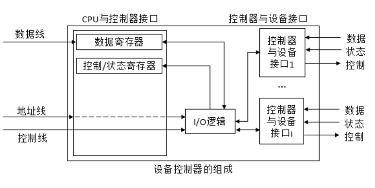
I/O地址映射方式
- 内存映像编址：控制器的内存/寄存器作为物理内存空间的一部分
- I/O独立编址：I/O的地址为新的空间的一部分
I/O控制方式
- 程序控制：缺乏硬件支持的程序只能通过不断询问外设状态的忙等方式来等待I/O结束
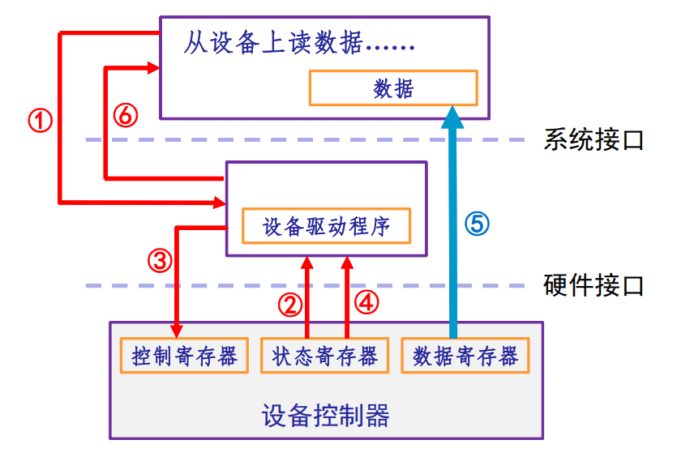 - 中断驱动：当I/O操作结束后由设备控制器主动地来通知设备驱动程序说这次结束，以中断的方式
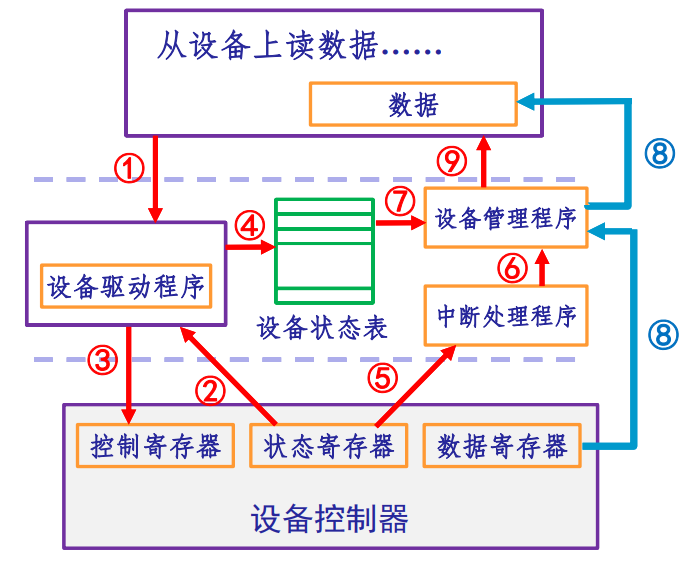 - DMA: 直接存储器访问方式，通俗的说就是由专门的控制器来完成内存和外设之间的数据传输工作
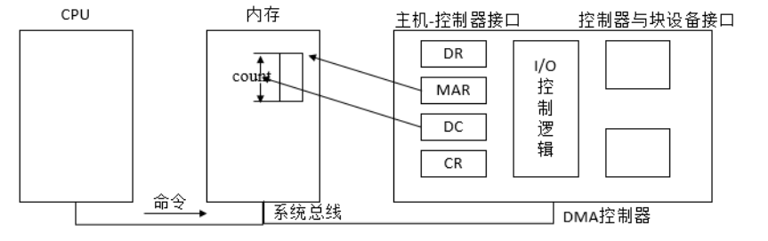 - 通道：极其类似于DMA，虽然叫通道，但是一种处理器，来完成内存和外设之间的数据传输工作，接管CPU的部分权限更多一点
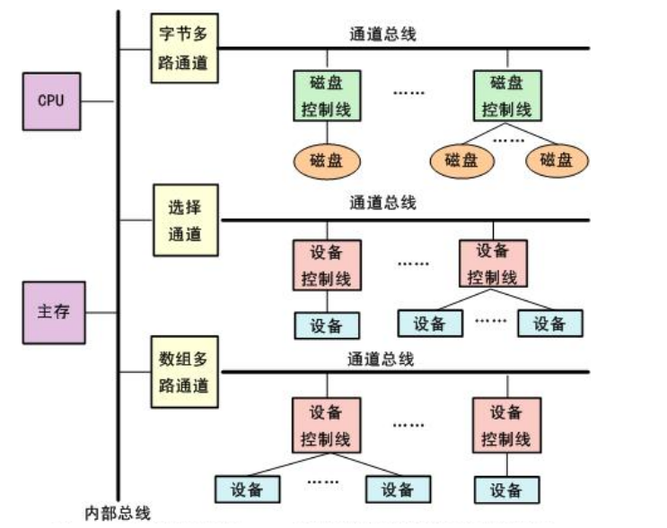通道分类
- 字节多路通道：以字节为单位在多个设备之间交叉工作，这边取一个字节，换个设备再取一个
- 数组选择通道：每次针对一个设备传送一批数据，只能一个个处理设备的传输请求。
- 数组多路通道：前两者的聚合。
I/O软件设计
特点
分层设计
分层设计，上层注重提供统一接口，下层注重与硬件的对接
设备独立性
上层请求设备逻辑设备名字，由软件对应物理设备名字。
实现结构
设备逻辑表：为了实现设备的独立性，系统必须设置一张逻辑设备表LUT(Logical Unit Table)，用于将应用程序中所使用的逻辑设备名映射为物理设备名。
该表的每个表目中包含了三项，逻辑设备名、物理设备名、设备驱动程序的入口地址。通过逻辑设备名，系统可以查找LUT，便可找到物理设备和驱动程序。
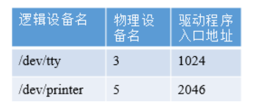
驱动程序
定位
- 与设备密切相关的代码放在设备驱动程序中，每个设备驱动程序处理一种设备类型。
- 设备驱动程序的任务是接收来自与设备无关的上层软件的抽象请求，并执行这个请求。
- 每一个控制器都设有一个或多个设备寄存器，用来存放向设备发送的命令和参数。设备驱动程序负责释放这些命令，并监督它们正确执行
组成
程序层
- 自动配置和初始化子程序。
- I/O操作子程序
- 中断服务子程序
函数层
- 驱动程序初始化函数、驱动函数卸载函数、申请设备函数、卸载设备函数
- I/O操作函数
- 中断处理函数
特性
- 动态可加载：内核对驱动程序召之即来，挥之即去。
- 无害性：即使这个驱动程序不服务于任何外设，也对系统无害
I/O缓冲管理
单缓冲
只有一个缓冲区，只有缓冲区内的数据被读取完毕后，I/O设备才能继续向缓冲区放入数据，所以CPU从缓冲区读出数据和I/O设备向缓冲区写入数据不能并行。
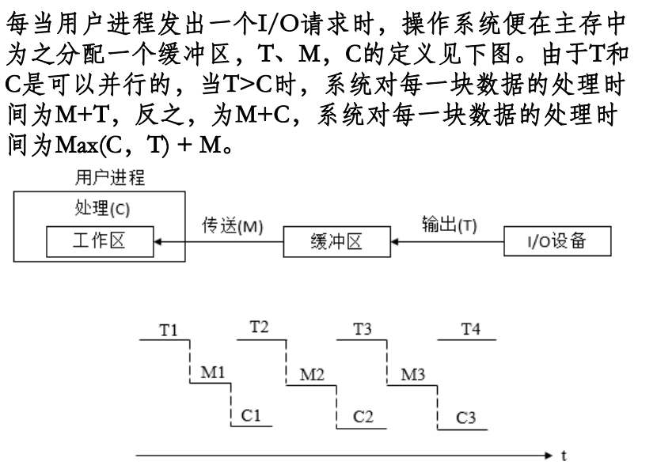
双缓冲
有两个缓冲区，I/O设备塞满一个缓冲区后，可以切换到下一个缓冲区继续塞，此时CPU可以从原来的缓冲区读出数据，实现了CPU从缓冲区读出数据和I/O设备向缓冲区写入数据并行。
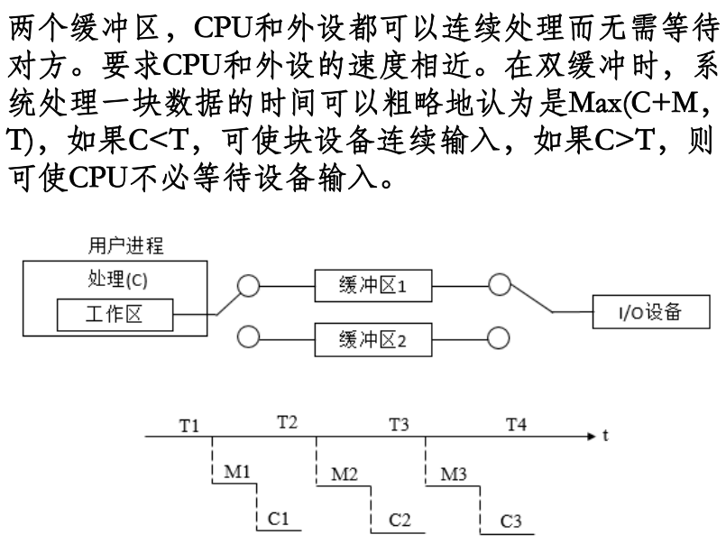
多缓冲
有很多缓冲区，为了切换方便组成了环形。
一般有三个指针，第一个指向下一个空缓冲，第二个指向下一个满的缓冲，第三个指向目前CPU正在读出的缓冲区。
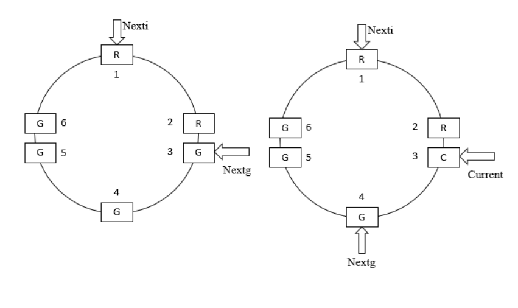
缓冲池
前面的听起来都很好，但是是对于某一个进程的，如果进程很多，开很多的循环缓冲的话，会很占用空间，这就引入了缓冲池，在池中设置了多个可供若干个进程共享的缓冲区。
管理方式
将相同状态的缓冲区链接成队列。
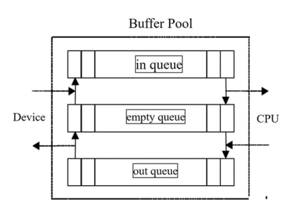
工作模式
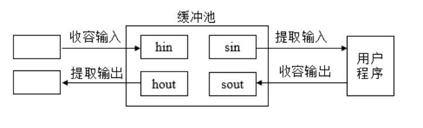
- 收容输入
- 提取输入
- 收容输出
- 提取输出
I/O设备分配
背景
面对很多的进程，I/O设备总是有限的，同样需要进行分配。
做法
- 设备控制表：一个设备一张，描述设备的特性和状态
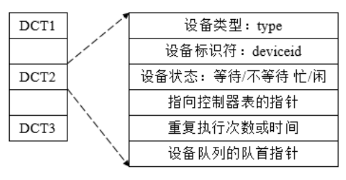 - 控制器控制表：一个控制器一张，描述I/O控制器的配置和状态。
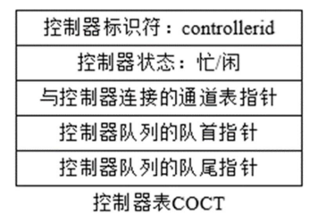 - 通道控制表：一个通道一张，描述通道工作状态。
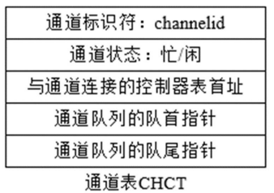 - 系统设备表：一个系统一张，反映设备资源的状态及其设备控制表的入口。
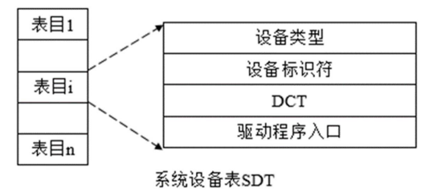分配方法
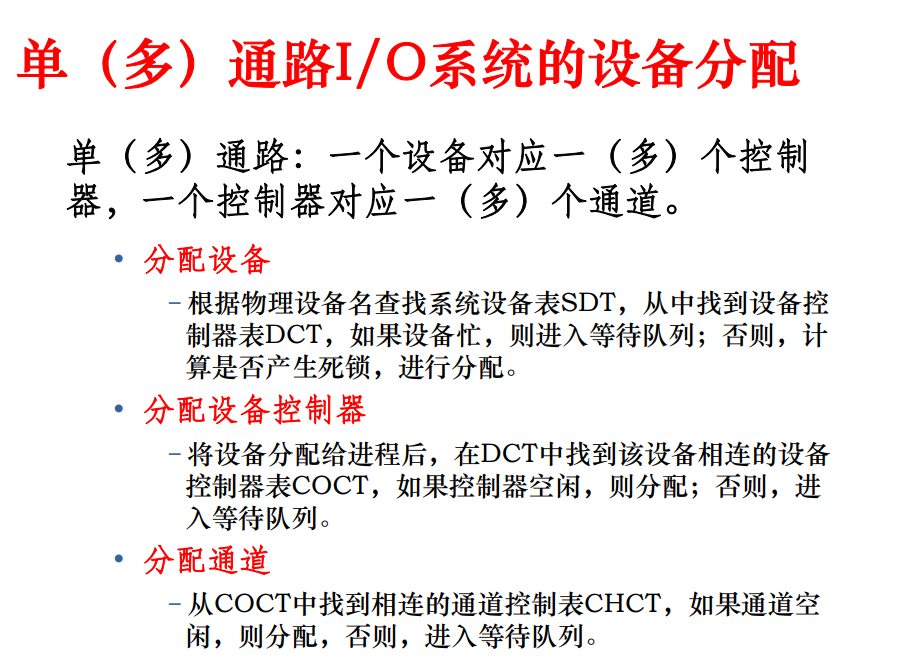
- 通过一个虚拟设备来将外设与应用进程隔开、只由虚拟设备来使用设备
实现
SPOOLing技术：应用程序进行I/O操作时，只是和SPOOLing程序交换数据，可以称为“虚拟I/O”。应用程序实际上是从SPOOLing程序的缓冲池中读出数据或把数据送入缓冲池，而不是跟实际的外设进行I/O操作。
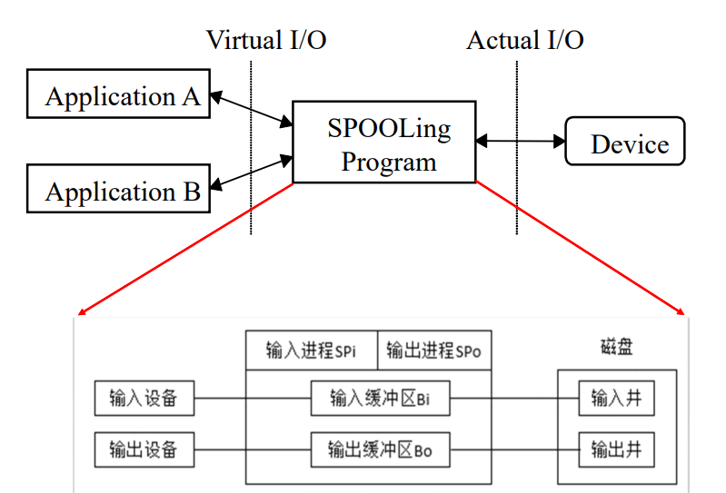
I/O操作
过程
本博客所有文章除特别声明外，均采用 CC BY-NC-SA 4.0 许可协议。转载请注明来自 ForeverYolo的博客！
相关推荐


评论